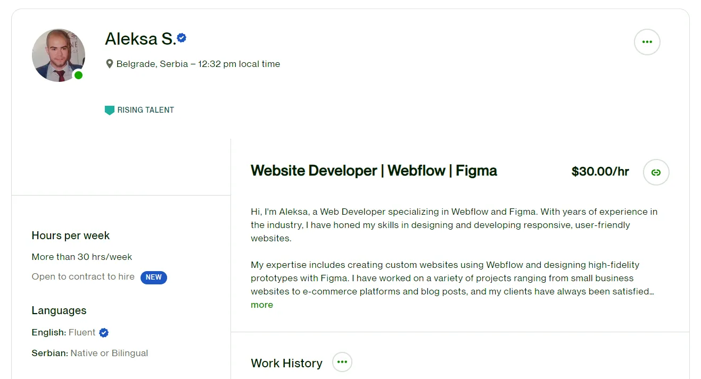

2022 - Present
Freelance
My journey as a freelance web developer began in 2022, and since
then, I have had the privilege of working with numerous clients,
helping them bring their digital vision to life. With my
expertise in Webflow, I create modern, visually stunning, and
functional websites that captivate audiences and drive results.
From the very start, I have been committed to delivering
high-quality web development services, ensuring that each
project is tailored to meet the unique needs of my clients.
Whether it's a simple landing page or a complex e-commerce
site, I bring a creative and strategic approach to each project,
helping businesses establish a strong online presence and
achieve their goals.

2021 - 2022
JavaScript Course
I am excited to share that I have successfully completed an
intensive JavaScript course from Udemy, taught by the renowned
instructor Jonas Schmedtmann. Throughout this course, I gained a
deep understanding of the fundamentals of JavaScript and learned
how to apply them in real-world scenarios.
With a focus on hands-on projects and real-world examples, the
course challenged me to develop my skills in JavaScript and hone
my problem-solving abilities. I learned how to work with
different data types, manipulate the Document Object Model
(DOM), and write more efficient and readable code using
functions and loops.
2018 - Present
JKP Infostan Tehnologije
I am proud to work for JKP Infostan Tehnologije, where I am a
part of a team of skilled developers that design and develop web
applications for clients. As a web developer, my primary
responsibilities include creating web applications that provide
an exceptional user experience, and designing user interfaces
that are intuitive and visually appealing.
To achieve this, I use a range of technologies and tools,
including C# (ASP.NET) and SQL database. These technologies
allow me to build web applications that are robust, efficient,
and secure, while providing a seamless experience for users.
2013 - 2018
Faculty of Organizational Sciences
I am thrilled to announce that I have successfully completed my
IT major at the Faculty of Organizational Sciences, University
of Belgrade. As a recent graduate, I have gained a wealth of
knowledge and skills in the field of information technology,
including programming, database management, web development, and
software engineering.
Throughout my studies, I had the opportunity to work on several
IT projects, both individually and as a part of a team. These
projects allowed me to apply the theories and concepts I learned
in the classroom to real-world situations, helping me gain
practical experience and develop my problem-solving and critical
thinking skills.
2009 - 2013
Gimnazija Čačak
I have successfully completed my high school education at
Gimnazija. As a recent graduate, I have gained a wealth of
knowledge and skills in a variety of academic disciplines,
including mathematics, sciences, languages, and social sciences.
I am grateful for the support of my teachers, classmates, and
family, who have helped me achieve this significant milestone in
my academic journey. The high school education I received at
Gimnazija was an enriching and challenging experience that has
broadened my horizons and prepared me for the challenges of the
future.